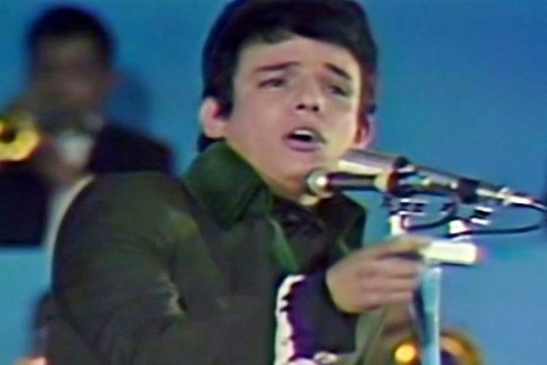
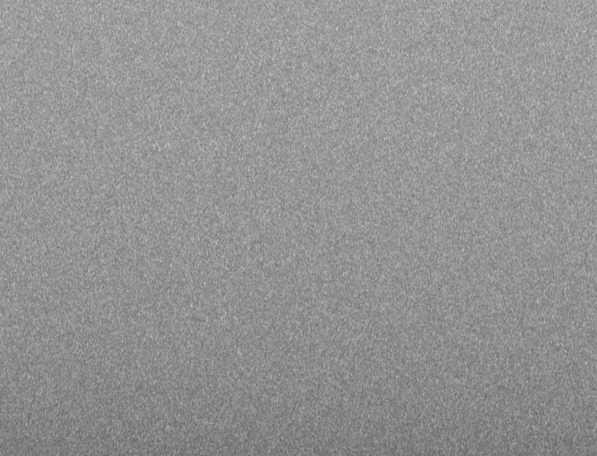

GIS (2017):
for clarinet, trombone, percussion, and electronics
written for and premiered by Richard Haynes, Ben Marks, and Peter Neville of the ELISION Ensemble
audio:
concert recording, Harvard University, May 20, 2017
---
This piece is about sine tones, white noise, voices, and the representation of things in fragments.
Program note from the premiere at Harvard, 2017/5/20

* 2019 addendum: R.I.P. José José